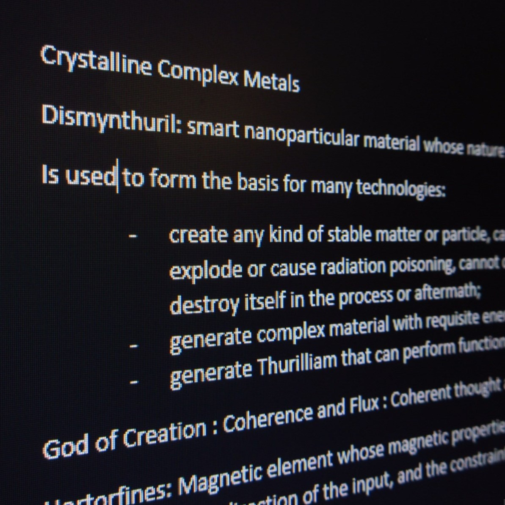
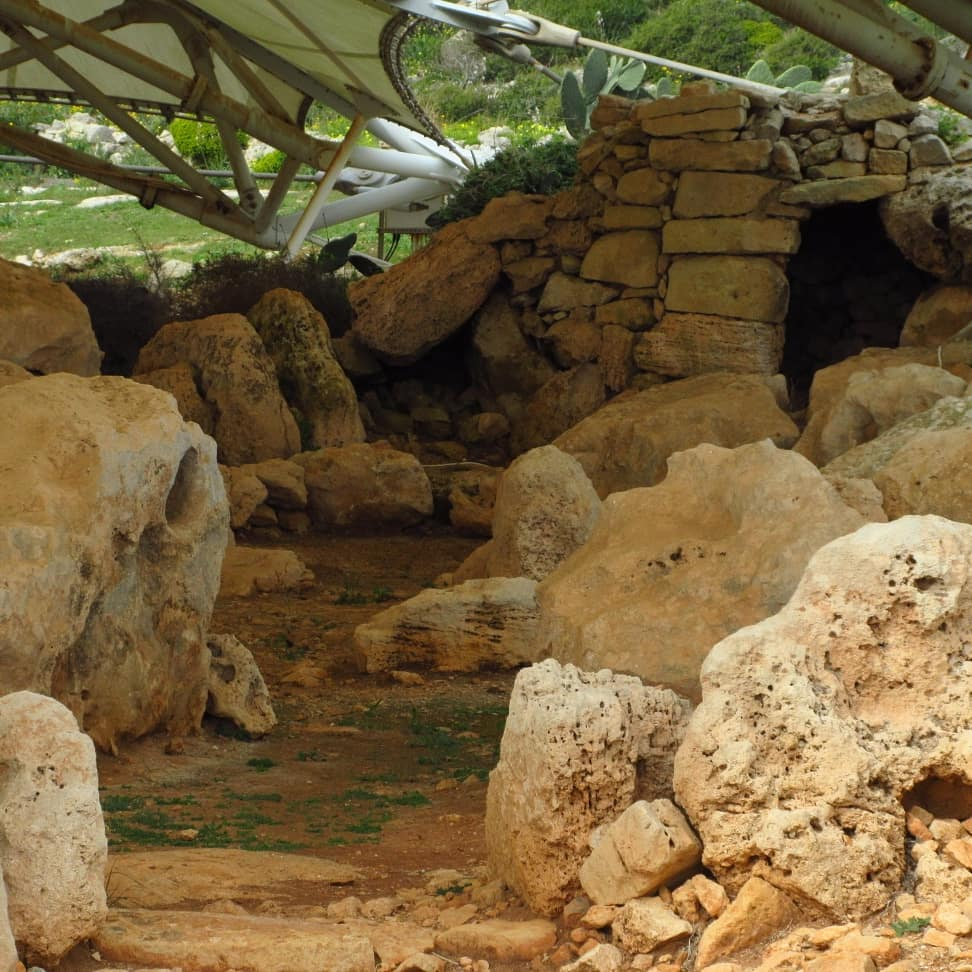
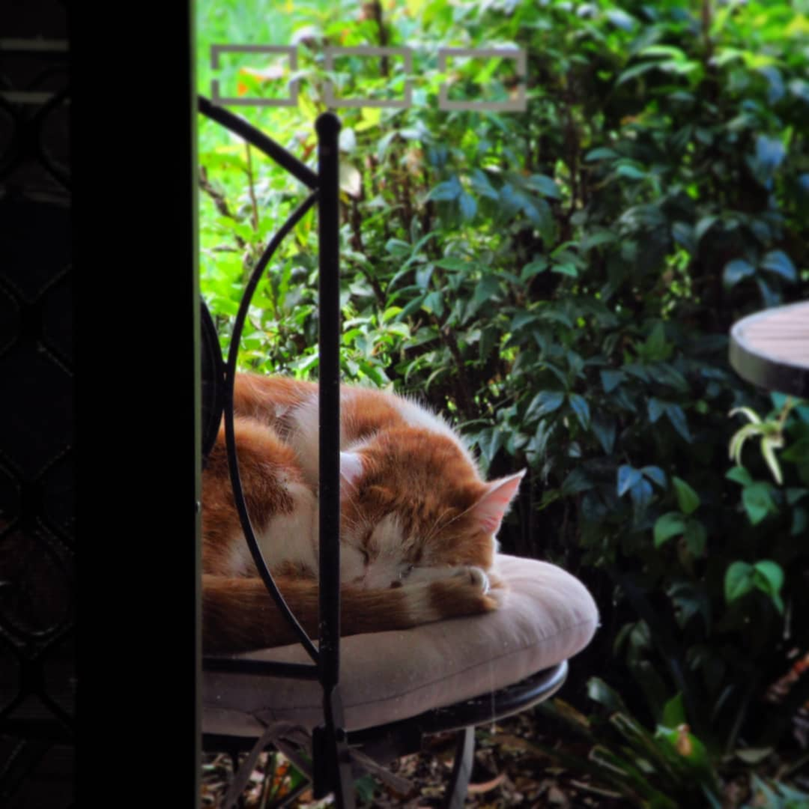
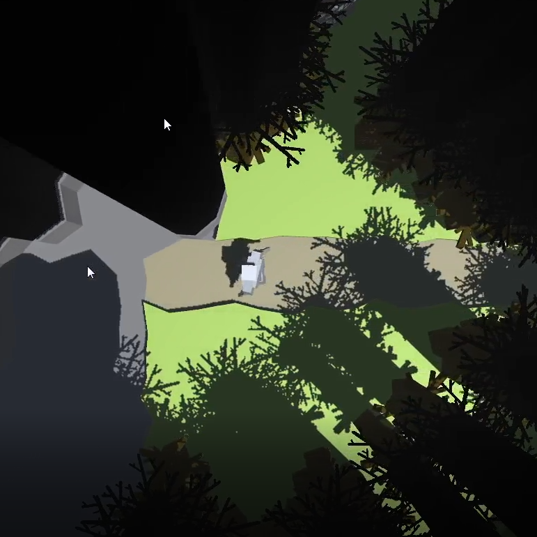
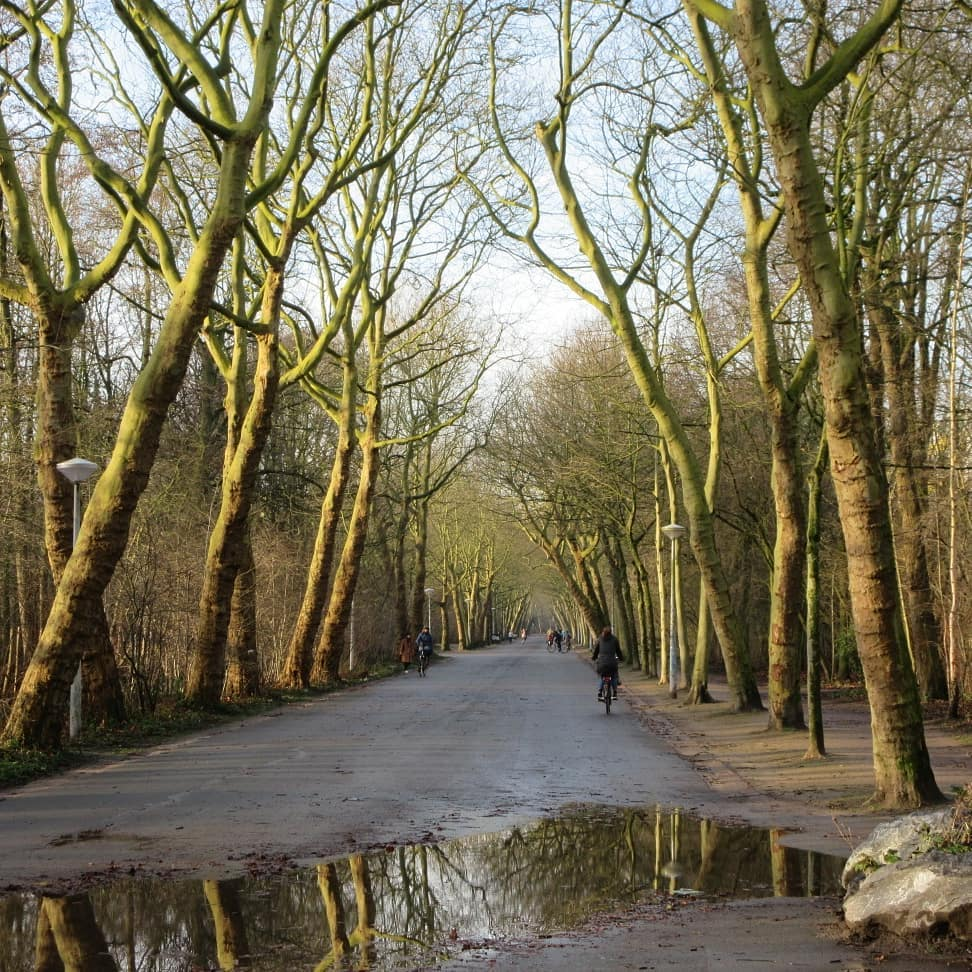

Rational Magic Systems
17th June 2020
Rational Magic systems are magic systems that make a certain kind of sense. They have rules that can’t be broken, or there are rules for when the rules can be broken! Where the magic comes from, and what can be done with it has to be constrained, it can’t be used to solve problems in the plot at the drop of a hat. I’ve been using this idea to develop a system of magic that fits into a kind of science-fantasy setting, artificial intelligence aided nanomachine stuff, but with wizards! It’s all very silly to be honest but it’s a great way to waste time.

Fantasy World Building
5th June 2020
I recently started listening to the Mistborn series of books on Audible, and it gave me a new idea for a book that I was trying to write years ago so I thought I’d give it another go. I’ve since gone into the weeds with how the magic and politics of my fictitious world would operate and it’s probably stifled any attempts at prose because I need everything to be worked out before I start writing! Regardless, the process of building a fantasy world in your mind and putting your ideas on paper is a great way to spend your free time if you’ve been doing too much coding!

Photography
20th May 2020
I’ve always been creatively minded, I loved doing origami as a kid and enjoyed sketching, but until my trip to Europe I’d never delved into Photography, but I’m super glad I did.
Just before my trip I went and bought a fairly cheap digital Canon, and over the course of the trip I took hundreds of photos, most of them terrible. But surprisingly some of them came out fairly well, and while I’ll never pretend I’m a great photographer I do seem to have a good sense of framing; getting things in the right spot. That’s what the photography teacher I found in Leiden told me anyway!
If you’d like to see a collection of my best photos please go to the Gallery.

Game Dev in Unity
15th Apr 2020
It was about October 2018 that I decided to try my hand at game development, and downloaded Unity. I’d read a few times that game developers are born when a gamer wants to play a game that doesn’t exist yet, and so it went for me.
The game is intended to be a Roguelike, a procedurally generated world that’s different every time, permadeath so when you die you have to start over in a new world, etc; but real-time instead of turn-based, and not on a grid. It will not be dissimilar to the game Unexplored but will play more like a real-time tactics game. I’ve developed a few cool things on the journey, both a dungeon generator and a biome generator, which generates cave systems with rooms and puzzles, and open areas with trees/lakes/rives/caves respectively. I’ve made my own procedural animation system because I couldn’t get my head around Unity’s Mechanim system. I made a procedural mesh generator for the objects in the world that don’t need to be prefabbed. I’ve also made my own modular a* pathfinding system for the AI so that I could easily give them different behaviours in how they manoeuvre toward and around the player.
Alas, while all this sounds great, the project is currently broken as I messed up transferring the project files from my old windows 7 system to a new windows 10 one, so I have a bit of work to do to get back to where I am in the most recent video on this page. But I still have all my old scripts so it shouldn’t take me too long to put everything back together and press on.

Europe Trip
23rd Feb 2020
I’ve talked a lot to friends, family and just about everyone who’ll listen about my little solo trip to Europe but I haven’t actually written anything down. I kinda regret that, would have been cool to look back on a written journal containing my thoughts at the time, and while I did take hundreds of photos chronicling the trip, many of which you can see on my Gallery page, it’s not quite the same. So I thought I’d start with a short summary of the trip, and in future posts go into each part of the trip in detail, not an exhaustive amount, but the right amount to stretch my writing muscles.
First things first, this was the order of countries and places I went to:
-
Transfer: Guangzhou China
-
Transfer: Amsterdam Netherlands
-
Stayed in Luxembourg then took the train to Amsterdam Netherlands
-
Stayed in Amsterdam then took train to Zwolle
-
Stayed in Zwolle then took train to Leiden
-
Stayed in Leiden then took train all the way down through Brussels then across the channel to London.
-
Stayed in London overnight then flew to Shetland
-
Stayed in Shetland then flew back to London
-
Stayed in London overnight then flew to Malta (I am Maltese on my mother’s side)
-
Stayed in Malta then flew back to the UK, Manchester
-
Stayed in Manchester, took day trips to both Liverpool and Leeds, took train to London
-
Stayed in London (Properly this time) then took train to York
-
Stayed in York for a few days, then flew to Geneva – Switzerland, and immediately took train from Geneva to Brides-Les-Bains
-
Stayed in Brides-Les-Bains for a few days then began the long trip back home to Brisbane.
In later blog posts I’ll go into more detail about each leg of the trip!